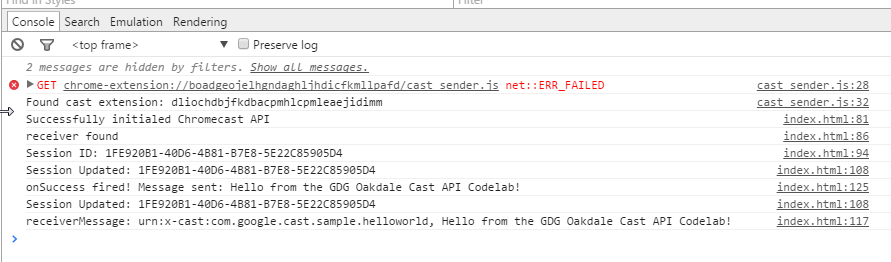

Getting started using Google Cast API as seen at a May 2015 meetup at GDG Oakdale.
This codelab is designed to help you learn about using Google Cast API. During this lab, we're going to build a secret chat party edition application.
Documentation! You can never have enough of it and during this codelab you may find yourself looking for one more method to go that extra mile. Docs you may find useful include:
When developing and deploying custom applications that fall outside the scope of the base receivers available, you would need a Google Cast Developer Account (which costs $5.00 USD). This codelab builds on top of an existing Google Cast sample allowing you to develop without the account.
All code solutions are available in the repo.
Before we can begin, make sure the Google Cast (beta) extension is installed. Once installed we can go to options via right clicking on the icon:
Note, this is different than the non-beta version of the extension, giving us additional tools such as the log to help give us additional debug support. Let's enable the log to see what conversations we're having with devices:
Besides [INFO] messages, the log can also provide insight into errors and other issues that you may run into while developing for Cast.
Now, let's start by creating a directory for our application:
➜ ~ mkdir my-secret-message
➜ ~ cd my-secret-message
Next, we need to create a few basic files:
➜ ~ touch sender.html
➜ ~ touch receiver.html
Why two html files? Cast API works by defining:
Now, let's write some code to get our app off the ground.
Let's start with the markup for sender.html:
<html lang="en">
<head>
<meta charset="utf-8">
<meta name="viewport" content="width=device-width, initial-scale=1">
<title>Secret message, Party Edition</title>
<style type="text/css">
body {
font-family: Roboto, Helvetica, sans-serif;
padding: 1em;
}
#instructions {
background-color: #eee;
padding: 1em;
margin: 1em;
}
input, button {
font-size: 1.6em;
font-weight: bold;
margin: 0.2em;
}
#message {
width: 100%;
}
</style>
</head>
<body>
<h1>Secret message, Party Edition</h1>
<p>Because anonymous messaging to a big screen at a party is a great idea.</p>
<div id="instructions">Cast to a Chromecast and then send messages to party the big screen.</div>
<div>
<input id="message" type="text">
<button id="sendMessage">Send</button>
</div>
</div>
<script src='https://ajax.googleapis.com/ajax/libs/jquery/1.9.0/jquery.min.js'></script>
<script src="https://www.gstatic.com/cv/js/sender/v1/cast_sender.js"></script>
<script> // more code here </script>
We've defined the form we'll use to send messages to the Cast API and some basic layout (feel free to make it your own). Now we need some layout of what our class, secretPartyMessages should look like. This class will do that talking to our Cast device:
var secretPartyMessages = (function () {
// use Google's sample, which has an existing receiver
var applicationId;
var namespace;
var session = null;
initializeCastApi = function() {
// todo
};
// more things
return {
init: function() {
// todo
},
sendMessage: function(message) {
// todo
}
};
})();
The structure seems simple enough; connect and send a message. Now it's just a matter of wiring up our class to the Cast API.
First, we need to set up some private variables to hold our application settings:
// use Google's sample, which has an existing receiver
var applicationId = '794B7BBF';
var namespace = 'urn:x-cast:com.google.cast.sample.helloworld';
var session = null;
How do we get this information? In this codelab, we're using Google's existing demo application id and namespace. When developing an application, we'd get the application id from the Google Cast Developer panel after we define our application settings:
Now, we need to a way to initialize the Cast API. First, let's create a private method called initializeCastApi():
initializeCastApi = function() {
var sessionRequest = new chrome.cast.SessionRequest(applicationId);
var apiConfig = new chrome.cast.ApiConfig(sessionRequest,
sessionListener,
receiverListener);
chrome.cast.initialize(apiConfig, onInitializeSuccess, onError);
};
You can see we're using two methods:
In the case of ApiConfig(), we can see that we're passing two methods:
sessionListener() - A listener to notify when a session is available to the applicationreceiverListener() - A listener to notify when there is a receiver availableLet's define the method for receiverListener() to let us know what's available:
receiverListener = function(event) {
if(event === 'available') {
console.log("Receiver found!");
}
else {
console.log("Receiver list empty! Oh No!");
}
}
Now let's define our sessionListener():
sessionListener = function(event){
console.log("Session ID: %s", event.sessionId);
session = event;
session.addUpdateListener(sessionUpdateListener);
session.addMessageListener(namespace, receiverMessage);
}
As you can see, we do a little more work; we set our private session variable to our new session and we add a couple of listeners to help us know how are session is doing:
session.addUpdateListener(sessionUpdateListener) - checks to see if session is still alivesession.addMessageListener(namespace, receiverMessage) - logs messages that comes from the receiversessionUpdateListener() needs to handle our session heartbeat, so let's define that method so that it checks if our session is still active:
sessionUpdateListener = function(isAlive) {
var message = isAlive ? 'Session Updated' : 'Session Removed';
message += ': ' + session.sessionId;
console.log(message);
if (!isAlive) {
session = null;
}
};
We can see that if things aren't alive, we reset our session.
For receiverMessage(), we can just log what our receiver sends back for now:
receiverMessage = function(namespace, message) {
console.log("receiverMessage: %s, %s", namespace, message);
};
Why might we want to know what the receiver is doing? If we have multiple clients connected to the Cast device playing a game, when clients send state to the device, we may want the device to relay that information to other players.
With all the methods now defined, we can update our public init() method to initialize:
init: function() {
if (!chrome.cast || !chrome.cast.isAvailable) {
setTimeout(initializeCastApi, 1000);
}
}
We can now call this method after the page is ready:
$(document).ready(function($) {
secretPartyMessages.init();
});
If we run our page from python's simpleHTTPserver, open our dev tools console, and select a Cast device, we can see the conversation from our code above:
Why the net::ERR_FAILED message? Because we don't have the non-beta version of the Google Cast extension installed. This does not effect our code as can be seen in the screenshot.
With our basic wireup of talking to the Cast device and receiving a session setup, we now need a way to send a message to the receiver. We can define a public method called sendMessage() within our class to help us send messages:
sendMessage: function(message) {
if (session !== null) {
session.sendMessage(namespace,
message,
onSuccess.bind(this, "Message sent: " + message),
onError);
}
else {
chrome.cast.requestSession(function(e) {
session = e;
session.sendMessage(namespace,
message,
onSuccess.bind(this, "Message sent: " + message),
onError);
}, onError);
}
}
Note: the use of the requestSession() in the else block does not cause our sessionListener to be invoked, so we must set our session from the callback.
Now that we have a means to send messages to the receiver, we just need to wire up our button:
$('#sendMessage').on('click', function(){
var message = $('#message').val();
secretPartyMessages.sendMessage(message);
});
If we Cast our application and click send message, we'll now see this on our Cast device:
Why the "Sample App" text? Because we're using Google's application id and namespace, which connect to their hosted receiver.
If we look at our Dev Tools console, we can see the conversation:
Stuck? Check the step-Final folder for a solution.
Note, to use the following code you'll need an account on the Google Cast Developer console, as well as Chromecast device in developer mode. You don't have to do this part of the codelab unless you want to dive further.
Custom receivers allow us to do more; we can define things that are specific to our applications or game.
Let's start by defining some HTML and CSS for our message-receiver.html:
<html lang="en">
<head>
<meta charset="utf-8">
<title>Secret message, Party Edition</title>
<style type="text/css">
body {
overflow:hidden;
}
#container {
height: 720px;
width: 1280px;
text-align:center;
display: table-cell;
vertical-align:middle;
background: radial-gradient(ellipse at center, #7d7e7d 0%,#0e0e0e 100%);
font-family: Roboto, Helvetica, sans-serif;
font-weight: 600;
font-size:3em;
color: #fff;
}
#container span {
font-size: 50%;
font-style: italic;
}
</style>
</head>
<body>
<div id="container">
<span>Secret message, Party Edition</span>
<div id="message">Send a message....</div>
</div>
</body>
</html>
Nothing too out of the ordinary; we've defined our container div to fit one of the output target for Cast (you can also see these dimensions in the Google Cast (beta) extension options).
Now let's add the receiver library:
<script src="//www.gstatic.com/cast/sdk/libs/receiver/2.0.0/cast_receiver.js"></script>
Let's wire up some methods we can listen for messages (the code is commented and is nearly identical to Google's sample):
// define our namespace
var namespace = 'urn:x-cast:com.gdgoakdale.cast.codelab.secretmessage';
// Update DOM for message
function displayText(text) {
document.getElementById("message").innerHTML = text;
window.castReceiverManager.setApplicationState("Message Received!" + text);
};
window.onload = function() {
cast.receiver.logger.setLevelValue(0);
window.castReceiverManager = cast.receiver.CastReceiverManager.getInstance();
console.log('Starting Receiver Manager');
// handler for the 'ready' event
castReceiverManager.onReady = function(event) {
console.log('Received Ready event: ' + JSON.stringify(event.data));
window.castReceiverManager.setApplicationState("Application status is ready...");
};
// handler for 'senderconnected' event
castReceiverManager.onSenderConnected = function(event) {
console.log('Received Sender Connected event: ' + event.data);
console.log(window.castReceiverManager.getSender(event.data).userAgent);
};
// handler for 'senderdisconnected' event
castReceiverManager.onSenderDisconnected = function(event) {
console.log('Received Sender Disconnected event: ' + event.data);
if (window.castReceiverManager.getSenders().length == 0) {
window.close();
}
};
// handler for 'systemvolumechanged' event
castReceiverManager.onSystemVolumeChanged = function(event) {
console.log('Received System Volume Changed event: ' + event.data['level'] + ' ' +
event.data['muted']);
};
// create a CastMessageBus to handle messages for a custom namespace
window.messageBus = window.castReceiverManager.getCastMessageBus(namespace);
// handler for the CastMessageBus message event
window.messageBus.onMessage = function(event) {
console.log('Message [' + event.senderId + ']: ' + event.data);
displayText(event.data);
// inform all senders on the CastMessageBus of the incoming message event
// sender message listener will be invoked
window.messageBus.send(event.senderId, event.data);
}
// initialize the CastReceiverManager with an application status message
window.castReceiverManager.start({statusText: "Application is starting"});
console.log('Receiver Manager started');
};
Key takeaways:
cast.receiver.CastReceiverManager.getInstance()onSenderConnected and onSenderDisconnectedwindow.castReceiverManager.getCastMessageBusonMessage()onMessage parses the message from the sender on the namespace we defined and updates our DOM with displayText()If we test this, we'll see this on our Cast device:
We can also remotely debug on the Cast device using Chrome dev tools. Make sure that your Cast device is enabled for debug in the developer console:
Next find the IP address on your local network of the Cast device (you can use the Android Chromecast app to see the address or look up the DHCP table in your router). Then you'll need to go to:
http://[CAST_DEVICE_IP]:9222/
If you app is casting, you'll see it listed and be able to debug and see all the console messages we just wrote in our code:
You might be asking yourself "but how does this work on mobile Chrome? Since there isn't a Cast plugin for mobile Chrome, you'd note that the above fails for mobile devices.
You options would be to:
This is outside the scope of the general usage of Cast API, but we've included a solution in the main repo that shows you how to use Firebase to send messages to the Cast device via the desktop cast sender app.
How it works:
Check the step-Firebase folder for a solution.
Congratulations! You have completed this codelab!